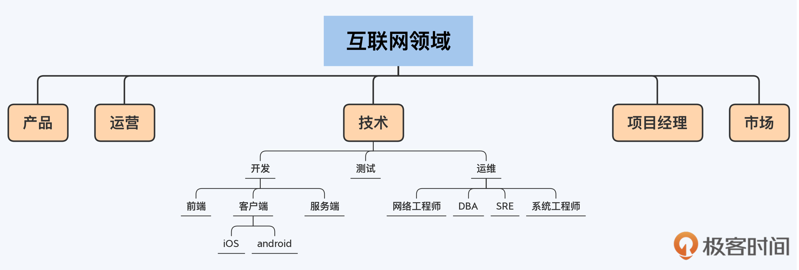
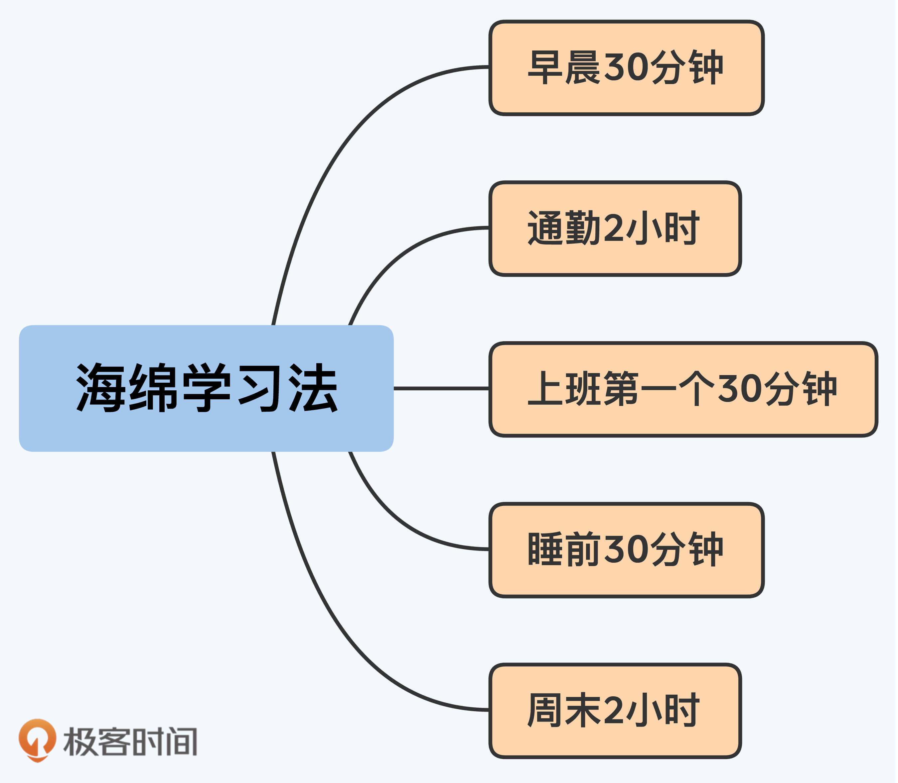

17 | 海绵学习法：怎么找到你的10000小时？
你好，我是华仔。
上一讲我简要地介绍了自己总结的一套系统的学习方法，而它的指导原则就是10000小时定律。
10000小时定律的走红，跟畅销书作家马尔科姆·格拉德威尔（Malcolm Gladwell）有很大的关系。2008年他在《异类》这本书里介绍了安德斯·艾利克森（Anders Ericsson）教授的研究成果，并提炼出了这个定律，要想成功就必须要有10000小时的投入。
10000小时定律意味着什么？
1. 成为专家需要10年
单纯说10000小时，我们可能没有一个直观的概念。其实艾利克森在“The Role of Deliberate Practice in the Acquisition of Expert Performance”这篇论文中总结前人的研究成果时，曾经提到过一个10年定律：
如果一个作曲家从6岁开始练习，那么他的第一个成名作品发表时间不会早于16岁；如果他从6～9岁开始练习，第一个成名作品会在大约22岁左右发表。
经过学者们的不断研究，10年定律已经在不同的领域得到了证实，包括音乐、数学、网球、游泳和长跑等。
如果我们把10000小时换算一下，就会发现这两个定律基本上是一致的：平均一天投入3小时，一年投入365天，那么10年算下来就是10950小时。
所以，10000小时定律意味着，成为某个领域的专家，需要花费10年时间。
2. 5000 + 5000 不等于 10000
10000小时定律所说的“成功”或者“成为专家”，是指在某一个领域，而不是所有领域一通百通。
所以专业聚焦对于10000小时定律的落地非常关键，如果你从A领域转行到B领域，而它们的差异又比较大的话，那么你分别在这两个领域投入的时间是不能累加的，相当于以前在A领域的积累被浪费掉了。
换句话说，分别在两个不同的领域投入了5000个小时的人才，在专业度上比不过专注在某一个领域投入了10000个小时的专家。所以，分清楚同一个领域和不同的领域是很重要的。
互联网行业的领域划分
具体说到互联网行业的话，典型的领域划分如下图所示：

（注意，这张图并不是完整的领域划分，比如“运营”和“测试”肯定也有各自的子领域，这里为了简洁地描述问题，只展开了“技术-开发-客户端”这条线作为例子。）
从图片中我们可以看到，一级领域有产品、运营、技术、项目经理和市场等；技术下面的二级领域有开发、测试和运维等；开发下面的三级领域有前端、客户端和服务端等；客户端下面的四级领域主要是iOS和Android。
一级领域的技术和运营属于两个不同的领域，应该是没有争议的；二级领域的开发和测试属于两个不同的领域，应该也是普遍共识。
但是，像前端和客户端、iOS和Android这种，它们是分别属于两个领域，还是属于同一个领域不同的技能呢？人们可能会有不同的意见，比如最近几年流行的“全栈开发”就提倡前端、客户端和服务端的开发都要掌握。
那么，我们的10000小时到底是投入到哪个级别上才最有效果呢？是四级领域iOS，还是要在三级领域客户端，又或者是二级领域开发呢？
我建议在三级领域这个级别进行投入。因为判断是不是同一个领域的方法，就是看面对的问题和采取的思维方式是否类似，至于工具本身，并不是区分的标准。
以客户端领域为例，无论是iOS开发还是Android开发，面对的问题都是如何在移动设备上做好和用户的交互，都需要考虑用户交互、App性能优化和App生命周期管理等。
从这个角度来说，客户端和前端其实也可以算同一个领域，因为前端面对的问题和采取的思维方式和客户端其实是类似的。这也是现在很多团队提倡的“大前端”概念的原因，毕竟两者关注的都是“用户体验和交互”这个领域。
但是，服务端就很难和客户端归为同一个领域，因为这两个领域面对的问题和采取的思维方式都是截然不同的。客户端关注的是用户体验和交互，服务端关注的数据处理和系统架构。这就和跑步很像，短跑名将博尔特可以参加100米、200米和4*100米的短跑比赛，但是他不会参加5000米或10000米的长跑比赛。
在互联网行业发展，明确领域的边界非常关键。因为这将影响你的发展路线，是在某个领域投入10000个小时的专家，还是在好几个领域分别投入几千小时的多面手。
虽然多面手可能在某些特定场景下也能够发挥很大的作用，但如果你想在大公司按照职级体系正常发展的话，专注某一个领域往往会更有优势。
当然，如果你已经达到了P9以上级别，必须要整合跨领域的技术来打造成熟的业务作品，那肯定是要在至少精通某一个领域的基础上继续跨领域学习的。
3. 工作时间外也要主动提升
刚才我们说到，10000个小时相当于连续10年平均每天投入3个小时。
你可能会有问：“我每天工作10个小时，这样算下来，岂不是不到4年就可以成为大牛了？”
很明显，这是不太可能的。原因在于，工作中的很多时间都是在做一些重复的事情，只是让已经掌握的技能变得更熟练而已，边际效益是越来越低的。所以，工作1个小时不等于学习1个小时。
这就像你练小提琴，每天都只练习《生日快乐歌》这个曲子，就算练10年也不可能成为专业小提琴手。你必须先练习某个难度的曲谱，熟练后再来练习下一难度的曲谱，这样逐步提升难度，最终才能成为专业的小提琴手。
同样的道理，如果你想要高效地提升自己，就必须不断地主动学习新的、复杂度更高的技能，等到工作中用得上的时候，抓住机会在实践的过程中练习，获得经验教训，进一步加深对技能的理解和掌握。如此循环往复，一步一步地提升自己的能力。
以我个人的经验来看，1天的上班时间大约相当于2个小时的有效提升时间。当然，这个数值不是绝对的，对于不断拓展创新的工作，大于2个小时；对于重复性比较高的工作，小于2个小时。
因此，我建议你除了上班时间外，尽量保证每天能够有1个小时的主动提升时间。
平均每天1个小时，看起来好像不多，但对于大部分人来说是很难做到的。互联网行业的人加班累成狗，感觉身体天天被掏空，周末又要通过各种娱乐活动放松自己，成家的还有家庭要照顾……总之，就是感觉钱总是不够，时间也总是不够。
很多人面对这种情况干脆就放弃学习了；也有的人意志力强一点，会强迫自己去牺牲休闲娱乐的时间投入到学习中，但他们也很难坚持，通常都是三分钟热血，劲头一过就恢复了原样。
海绵学习法
那么，怎么解决时间不够这个问题呢？“海绵学习法”就是针对性的解决方法。
我把这个方法取名为“海绵学习法”，其实是借用了鲁迅的名言——“时间就像海绵里的水,只要愿意挤，总还是有的。”
海绵学习法的关键就是“挤时间”。它既不需要我们放弃所有的休闲娱乐，也不需要在累成狗的时候强行“打鸡血”逼着自己去学，而是让我们通过长期坚持的方式，达到“积少成多、聚沙成塔”的效果。
下面，我们来就看看日常工作和生活中，有哪些地方可以挤出时间来学习。
早晨30分钟
首先，我们可以把起床的闹钟提前30分钟，比如原来07:30的闹钟可以改为07:00。不用担心提前30分钟起床会影响休息质量，习惯以后，早起30分钟不但不会影响一天的精力，甚至可能反而让人更有精神。
早起的时间可以用来看书，30分钟基本上足够看完一本书的一个章节了。
通勤2小时
然后是通勤，大城市的上班通勤时间在1个小时左右，每天往返就有2个小时了。
你可以根据通勤方式选择对应不同的学习方式。如果做公共汽车或者自己开车上下班，可以听书籍和线上课程的音频；如果坐地铁，除了听音频，也可以看电子书和线上课程，要是有座位，还可以看纸质书。
上班第一个30分钟
刚到工位的第一个30分钟（或者开完晨会后的30分钟），这时候一般也没什么会议，也很少有人来打扰，大脑又是最活跃的时间，所以学习的效果非常好。
不用担心这30分钟会影响项目进度，一天当中总会有其他事情浪费30分钟以上的时间，比如不必要的会议、低效的沟通、玩手机摸鱼等。如果担心影响项目进度，你可以在别的事情上提高效率。
睡前30分钟
大部分人在睡前都会进行一些休闲娱乐活动来放松自己，比如玩游戏、追剧、看电影、刷短视频等。对于忙碌了一天的劳动者来说，适当的放松是必不可少的，我们不必完全放弃这些活动，只需要从中挤出30分钟就行了。
比如少玩2局王者荣耀，30分钟就挤出来了，从整个赛季来看，完全不会影响你的段位；少看一集电视剧，也能够节省30分钟以上的时间；至于少刷30分钟的短视频，就更加没什么影响了。
周末2小时
大部分人周末都会安排一些耗时很长的活动，比如购物、逛街、聚会、看电影、旅游和睡懒觉等。只要你有意识地挤时间，很容易就能挤出2个小时，比如购物、逛街和聚会的时候控制时间、早点回去；减少一些“无效社交”的时间；旅游的时候做好时间规划；本来准备睡10小时懒觉，改为睡9小时……
关键还是意志力
这些方法对你原来的工作和生活影响很小，但只要长期坚持，积累的时间规模和个人的成长速度都是非常可观的。我通过这种方式，一年阅读的非技术书籍可以达到80本以上，技术相关的书籍可以达到20本以上。
当然，这些方法仍然需要我们稍微克服一下人性的弱点，只是用不着“头悬梁锥刺股”这样夸张而已。但是如果你连少打一局游戏、少刷一集剧这样的意志力都没有，那么无论多么有效的方法对你来说都是没有意义的。
小结
这一讲我跟你分享了如何将10000小时定律具体落地的第一个关键方法：海绵学习法。通过海绵学习法我们可以做到既不对工作、家庭和休闲有较大影响，又能够保证足够的时间来提升自己。
现在，我们回顾一下这一讲的重点：
- 按平均每天投入3小时计算，10000小时定律意味着，成为某个领域的专家需要花费10年时间。
- 不同的领域，面对的问题和采取的思维方式也不同，投入的时间是不能叠加的。
- 上班时间不能直接等价为有效的提升时间，我们每天下班后还应该主动投入1个小时来学习。
- 海绵学习法不需要完全放弃休闲娱乐，也不需要强行打鸡血，只需要稍微克服一下人性的弱点，长期坚持，积少成多。挤时间的来源包括早晨30分钟、通勤2小时、上班第一个30分钟、睡前30分钟和周末2小时等。

思考题
这就是今天的全部内容，留一道课后思考题给你吧。分析一下你目前每天的时间分布，你觉得自己可以从哪些地方挤时间？大约能挤出多久？
欢迎你把答案写到留言区，和我一起讨论。相信经过深度思考的回答，也会让你对知识的理解更加深刻。